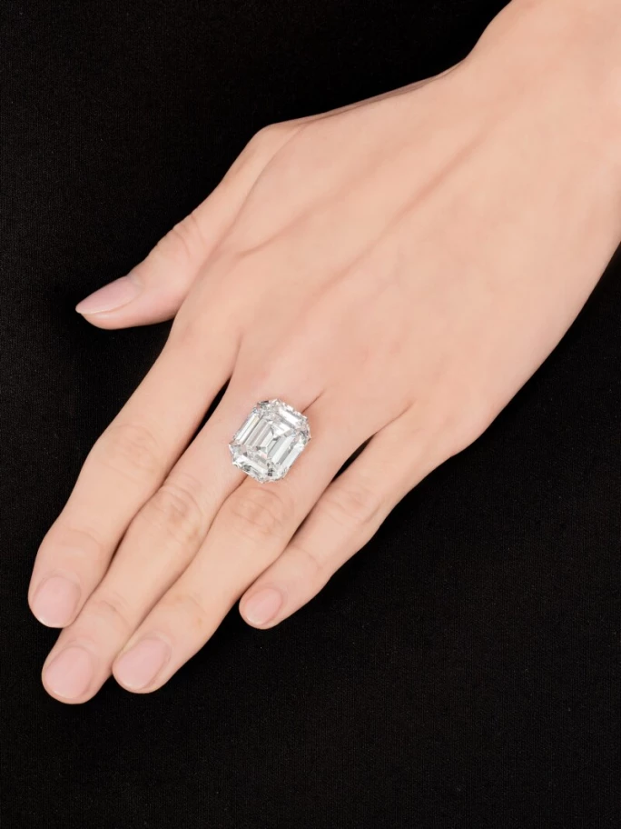
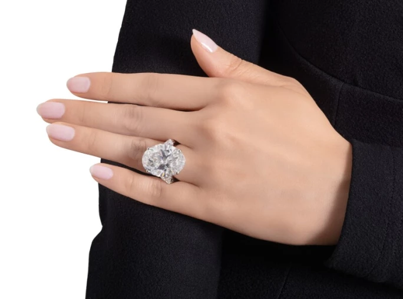
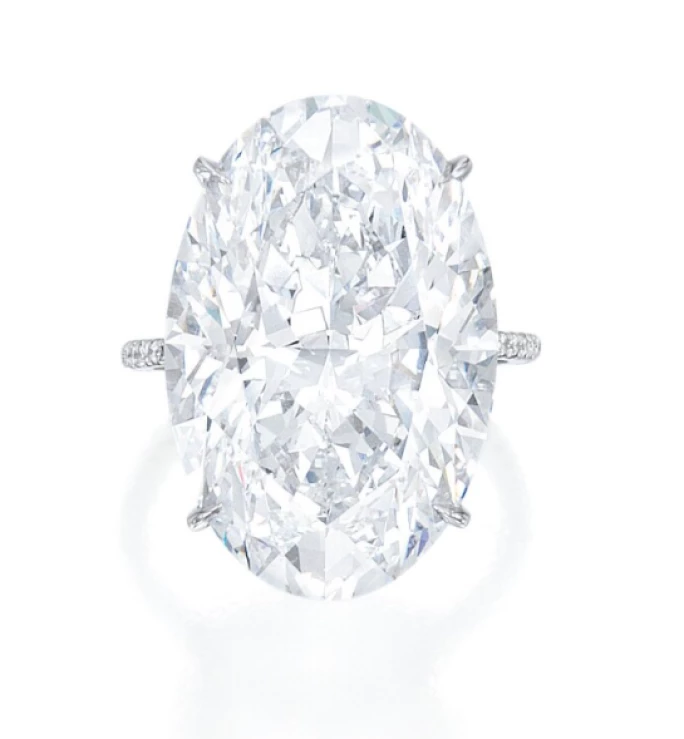
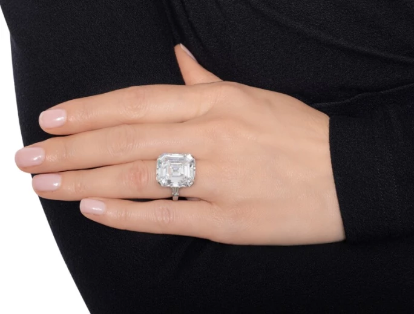
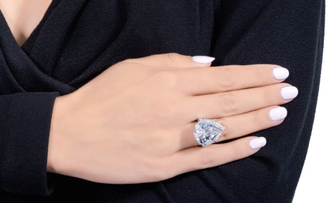
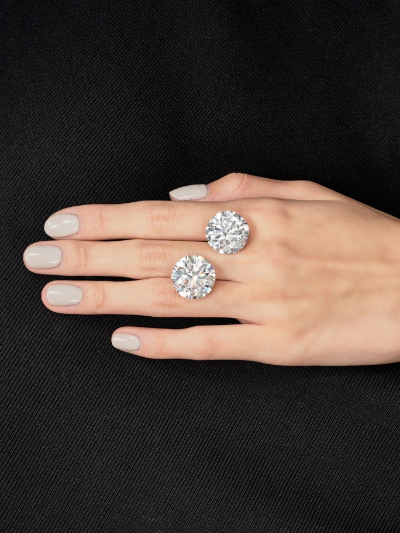

譯自 Lydia Dokko · Sotheby's
探索臻選 20 克拉鑽戒的奧秘：從稀有性、價格到專家建議，助您成就百萬級奢華之選。
對於追求極致奢華的鑑賞家而言，一枚 20 克拉鑽石戒指不僅是耀眼奪目的珍品，更是一項意義非凡的投資。無論是用於求婚、慶祝重要里程碑，抑或是為高級珠寶收藏錦上添花，深入了解甄選此等稀世瑰寶的精妙之處至關重要。本指南將引領您深入了解，在您決意成就百萬級的璀璨之躍前，所需知曉的一切。
20 克拉鑽戒：為何獨具魅力？
一顆 20 克拉的鑽石戒指不單是珠寶，更是大自然與匠心的結晶。買家尋求此類非凡美鑽，通常用於訂婚戒指、結婚週年紀念，或為紀念人生中的重大成就。選擇 20 克拉鑽石最令人信服的原因之一，在於其稀有難得；隨著尺寸增加，高品質的鑽石越發珍稀。
20 克拉鑽石的純粹視覺震撼力非同凡響，卻依然適合日常佩戴，彰顯優雅風範。一顆 20 克拉的圓形鑽石直徑約為 20.3 至 21.0 毫米，約等同於一顆美國一角硬幣的大小。20 克拉鑽石非常稀有，所以價值隨時間推移亦往往保持穩定，甚至有所增長。達到如此尺寸，切割與拋光的精準度更顯關鍵，能極致提升鑽石的璀璨光芒與獨特個性。一顆 20 克拉的鑽石能駕馭各式定制鑲嵌，而絲毫不減其奪目風采。

祖母綠切割鑽石，20.19 克拉，D 色，內部無瑕，140 萬美元成交
如何甄選 20 克拉鑽戒？
尋覓 20 克拉鑽石戒指時，最好從明確的預算與心儀的切割形狀入手。大多數買家的最低預算設定在 100 萬美元，不過品質稍遜的 20 克拉鑽石價格或略低於此。考慮到鑽石的尺寸，任何色彩或淨度上的瑕疵都將更為顯著。
20 克拉鑽石最受歡迎的切割包括橢圓形、梨形及祖母綠切割，而枕形與方形切割亦是頗具吸引力的選擇。由於每顆 20 克拉鑽石皆獨一無二，在最終決定前，不妨多看幾顆，審慎挑選。選購過程需要耐心，尋覓此等非凡美鑽往往頗費時日。不拘泥於特定的克拉重量，並為定制鑲嵌預留額外時間，亦有助確保購得完美珍品。

格拉夫橢圓形鑽石戒指，21.54 克拉，D 色，VVS2 淨度，IIa 型，140 萬美元成交
對於真正非凡的鑽石，蘇富比專家建議尋找經由大師切割、淨度上乘且色彩頂級的天然鑽石。雖然無瑕或內部無瑕的鑽石是理想之選，但由於較大鑽石的瑕疵更易察覺，淨度等級從 VVS1 起步尚可接受。一枚無瑕的 20 克拉鑽石，即使在放大鏡下也看不到任何內含物。
在色彩選擇上，D 色為最高等級，代表純淨無瑕的完美色澤。對於頂級的 20 克拉鑽石，建議選擇 D 或 E 色等級。切工品質同等重要，圓形鑽石應達到「極優」（Excellent）切工等級，而花式切割則至少應達到「優良」（Very Good）。許多藏家偏愛 IIa 型鑽石；這類鑽石屬天然鑽石中最純淨的形態，不含氮或硼雜質，佔所有開採鑽石的比例不足 2%，卻能展現無可比擬的璀璨光芒與澄澈淨度。

橢圓形鑽石，21.56 克拉，D 色，內部無瑕，IIa 型，200 萬美元成交
鑽石類型：I 型與 II 型
約 95% 的鑽石為 Ia 型，含有微量氮元素。這類鑽石常見於訂婚戒指與高級珠寶。Ib 型鑽石常呈現鮮亮的金絲雀黃色調，亦相對罕見。
II 型鑽石則更為稀有，且因內含物較少而展現超凡淨度。IIa 型鑽石最為純淨，不含氮或硼，常呈現非凡的淨度與光彩。它們可見於粉紅色、棕色及藍色等珍罕色彩。2020 年，蘇富比售出一枚由洛林·施瓦茨（Lorraine Schwartz）設計的橢圓形 21.56 克拉鑽石戒指，D 色、內部無瑕且屬 IIa 型，成交價近 200 萬美元。
IIb 型鑽石含有硼元素，呈現獨特的藍色或灰藍色調。這類鑽石比 IIa 型更為稀有，並具有獨特的導電特性。著名的「希望之鑽」（Hope Diamond）便是一顆 IIb 型鑽石。

格拉夫祖母綠切割鑽石，21.46 克拉，D 色，VVS2 淨度，IIa 型，180 萬美元成交
名流雅士的 20 克拉鑽戒傳奇
數個名人訂婚儀式中，皆出現了非同凡響的 20 克拉鑽石戒指。2016 年，肯伊·威斯特（Kanye West）以一顆由洛林·施瓦茨設計的祖母綠切割 20 克拉鑽石戒指向金·卡戴珊（Kim Kardashian）求婚，估價達 450 萬美元。另外，卡特·雷姆（Carter Reum）贈予派瑞絲·希爾頓（Paris Hilton）的求婚戒指，由尚·杜桑（Jean Dousset，路易·卡地亞的後人）設計，亦鑲嵌一顆 20 克拉祖母綠切割鑽石，價值約 200 萬美元。另一顆傳奇求婚戒指由傑斯（Jay-Z）贈予碧昂絲（Beyoncé）；這顆 18 克拉祖母綠切割鑽石訂婚戒指，估價高達 500 萬美元。

海瑞溫斯頓梨形鑽石戒指，23.65 克拉，D 色，VVS2 淨度，140 萬美元成交
20 克拉鑽戒的市場價值
20 克拉鑽石的價格因色彩、淨度及稀有程度而差異顯著。在價格區的較低端，一枚 20 克拉 F 色、VVS 淨度的鑽石起價約為 100 萬美元。而一枚 D 或 E 色、無瑕或內部無瑕的 20 克拉鑽石，價格可達 100 萬至 300 萬美元，甚至更高。IIa 型鑽石因其超凡的純淨度與璀璨光芒，價值更為高昂。對於尋求更為稀世的瑰寶的藏家而言，彩鑽的價格更是幾何級數增長。一枚20 克拉的濃彩或艷彩黃鑽比白鑽更為罕見，而 20 克拉的粉紅或藍色鑽石更是鳳毛麟角，往往需要更為可觀的預算。蘇富比建議僅購買附有 GIA 認證的鑽石，以確保來源可靠與品質優良。

一對未鑲嵌圓形明亮式切割鑽石，分別重 21.14 及 20.17 克拉，近 500 萬美元成交
一枚 20 克拉的鑽石戒指，是奢華之巔的象徵。無論您是為愛購藏、為慶典加冕，抑或是作為收藏珍品，深入了解其稀有程度、品質及市場價值的精微之處都至關重要。憑藉正確的知識與專業指引，您將能自信地成就這百萬級的璀璨之躍，擁有一枚真正非凡的歷史珍藏。